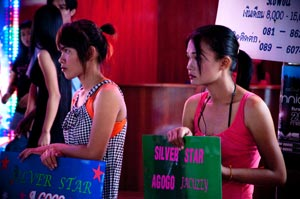

Our Mission
Eastside Women of Purpose (EWOP) is a volunteer organization comprised of women seeking to be advocates for women and children at risk of, or enslaved in, the injustices of sexual exploitation, trafficking & slave labor both here and abroad.
Our mission with this event is to raise money to STOP human trafficking both locally and throughout Southeast Asia through education and prevention. Specifically, these funds will help us to expand the currently supported training and recovery center in Pattaya, Thailand as well as launch an intervention program to prevent young children and teens from being trafficked into the city. By slowing human trafficking in SE Asia, we drastically reduce the amount of women and children illegally trafficked into the US and more specifically, Seattle.
In addition to our continuing work in Asia, one of our primary initiatives this year is to reach out to our local community. The Seattle area is estimated to be home to 300-500 girls out on OUR streets being sexually exploited each year. It is our mission to educate our local citizens and implement programs that STOP this growing problem.